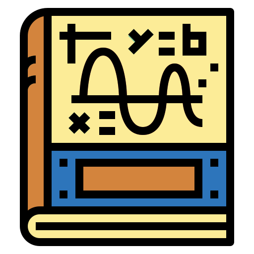
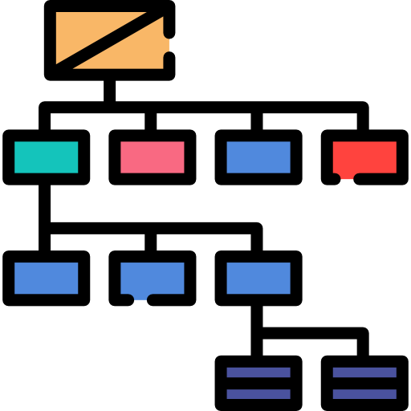
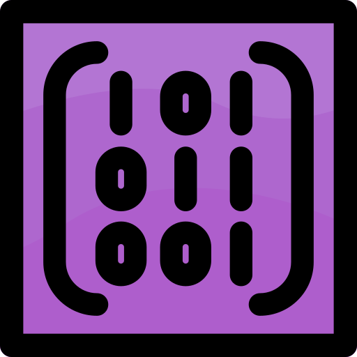

ΑΡΧΙΚΗ
ΠΡΩΤΟ ΕΤΟΣ
ΔΕΥΤΕΡΟ ΕΤΟΣ
ΤΡΙΤΟ ΕΤΟΣ
ΤΕΤΑΡΤΟ ΕΤΟΣ
ΕΞΤΡΑ
Πρώτο Έτος
1ο Εξάμηνο

Ανάλυση Ι
Αρχές προγραμματισμού [C/C++]
Εισαγωγή στην Επιστήμη των Υπολογιστών [Python]
Λογική Σχεδίαση
Μαθηματικά των Υπολογιστών
Τεχνολογίες Διαδικτύου [HTML/CSS/JS/PHP]
2ο Εξάμηνο
Ανάλυση ΙΙ
Αντικειμενοστρεφής Προγραμματισμός [Java]
Διακριτά Μαθηματικά

Δομές Δεδομένων [C++]

Εφαρμοσμένη Άλγεβρα
Αρχιτεκτονική Υπολογιστών [Assembly]